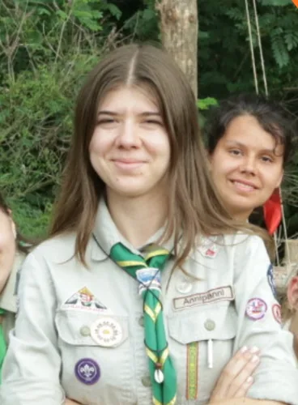

Csapatunk gyökerei az 1920-as évek gödöllői cserkészetéig nyúlnak vissza. A cserkészet 1948-as betiltása után 1989-ben indultunk újra, és ma több mint 400 gödöllői és környékbeli gyerek és fiatal tartozik közénk. Hetente őrsgyűlésen találkozunk, félévente kirándulásokat és portyákat szervezünk, nyáron pedig tíznapos táborban kovácsolódunk össze.
Tovább a Rólunk oldalraCsapatparancsnok
802@Csapatparancsnok
Miért keresd?
Pénzügyek
cs.adam.b@Pénzügyekért felelős csapatparancsnok-helyettes
Miért keresd?
Bezsilla Villa
grebel.hanna@Csapatotthonért felelős csapatparancsnok-helyettes
Miért keresd?
Tábor és programok
bedo.gergely@Programokért felelős csapatparancsnok-helyettes
Miért keresd?

Nevelés és gyermekvédelem
peter.anna@Nevelés és gyermekvédelem
Miért keresd?